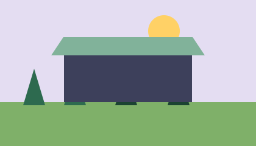
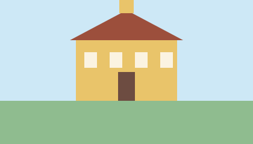

5.10.2026
Nouvelle vélostation à la gare
Dès le 1er novembre, 120 places couvertes pour vélos sont à disposition à la gare.
5.10.2026
Dès le 1er novembre, 120 places couvertes pour vélos sont à disposition à la gare.

8.10.2026
Le 6 novembre à 18 h, les enfants traversent le village avec leurs lumignons.

11.10.2026
Circulation alternée du 3 au 21 novembre en raison de la pose d'un nouveau revêtement.

14.10.2026
Les nouvelles marques sont disponibles dès le 4 janvier au guichet du contrôle des habitants.